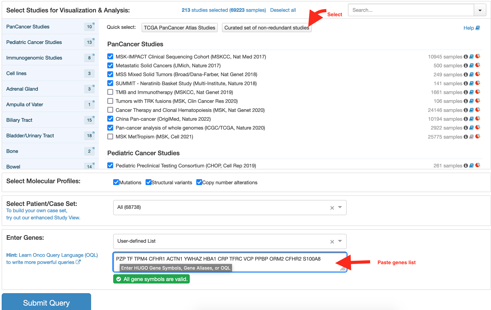
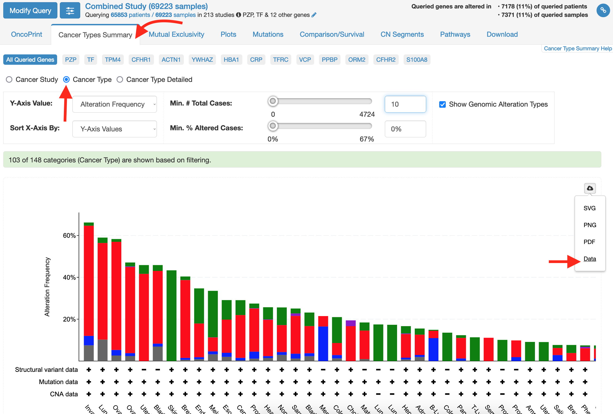
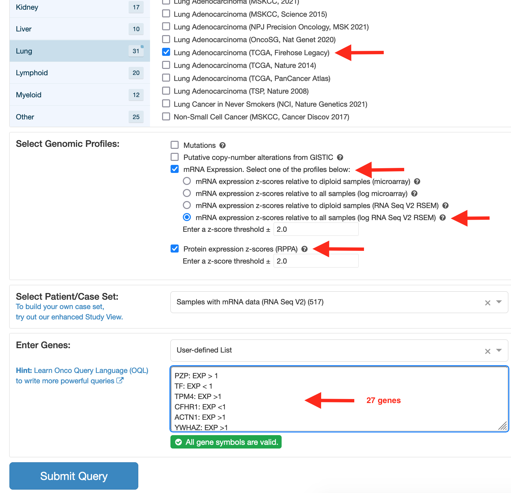
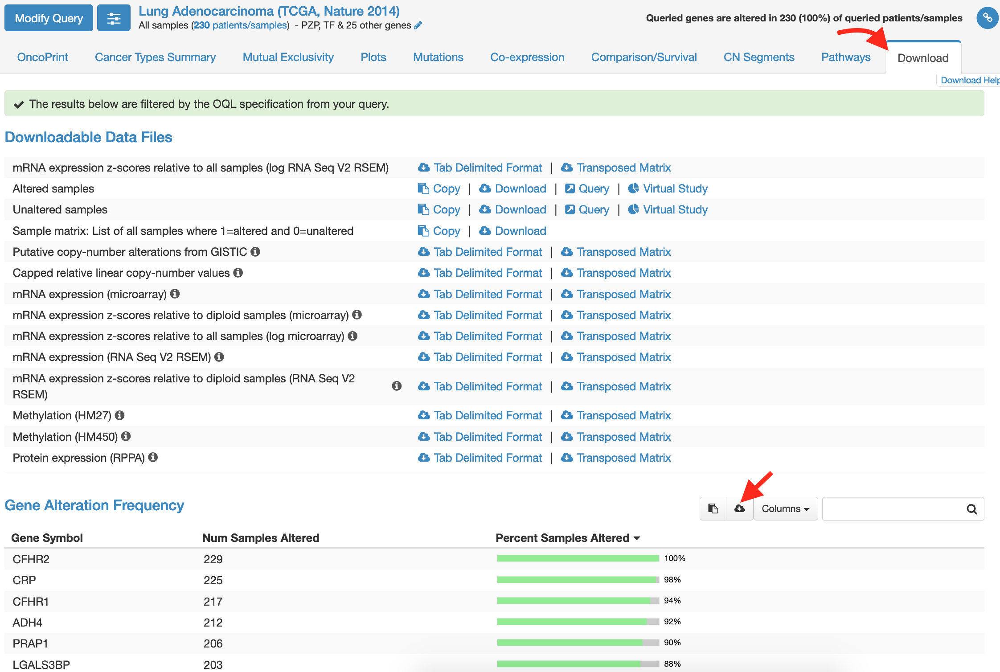

Chapter 6 Interactomics
6.2 Case Study: Graphical identification of cancer-associated gene sub-networks based on small proteomics data sets
This tutorial describes the main steps used to construct an enriched network from a list of genes with their expression values. The network includes the fold change, the False discovery rate (FDR), the gene expression correlation, the most often involved biological processes, and the most likely corresponding diseases. All the main steps are illustrated by screen shots. The Tools & Data section lists all the tools and data required. The “Data computing” section shows you how to compute the data. The Experimental procedure section lists briefly all the steps, and the Walk-through example section illustrates these steps. The final section lists all the software and packages that were tested during this study, but not selected for inclusion in this Note.
6.2.1 Tools & Data
For this tutorial you will need:
- Bioinformatic tools
Cytoscape (Shannon et al. 2003; Cline et al. 2007) software implemented by Reactome FIs (Wu, Feng, and Stein 2010), Advanced Network merge, NetworkAnalyzer, and ClueGO (Bindea et al. 2009) Apps.
- Experimental Data
To find out more about the file format, download the corresponding supplemental file indicated in parentheses.
The list of modulated protein saved in one column in text file (only_modulated_symbol.txt). Convert the protein ID on gene symbol (HGNC or HUGO symbol) using ID Mapping service, such as:
- BioMart
- Uniprot
- Idconverter (Alibés et al. 2007)
- GAGE (Luo et al. 2009) with the
eg2symfunction.
The protein expression values. The following example of gene expression is divided into two groups and 3 replicates. (proteinEXP.txt)
Node Attributes
- Fold change of the protein identified (Fold_Change.NA)
- False discovery rate of the z score or some other statistical test (FDR.NA)
- Correlated protein expression by statistical analysis (Correlation_Network.sif)
- Cancer-protein network (Cancer_Network.sif)
Edge attributes
- The correlation rate of Protein expression (Correlation+Cancer.EA)
- The gene expression profile overlap between our experiments and clinical data from the cBio Cancer Genomics Portal Gao et al. (2013) (Correlation+Cancer.EA)
6.2.2 Data Computing
6.2.2.1 Gene list
We assume that the protein list with quantitative analysis has already been compiled . Supplemental proteinEXP.txt file gives an example of the quantitative data which will be used.
Pre-process the expression data into a format suitable for network analysis, clean the data by removing obvious outlier samples or excessive numbers of missing entries, and then load the data. The gene list is selected after statistical analysis. The Fold change and False discovery rate are then computed and saved in the corresponding files: Fold_Change.NA and FDR.NA.
6.2.2.2 Multiple Correlation analysis of protein expression
Two genes are said to be connected by an edge if their expression values are closely correlated (statistical significance). We used CORREP package (Zhu, Li, and Li 2007) to estimate the gene expression correlation.
This program assumes that data are arranged with the variables (genes) in rows and conditions (persons) in columns . It is strongly suggested that factor names be included in the data file, as this information is used in the results output.
We specified that the proteins (or genes) are the variables, and the people correspond to the different conditions. In our case we have 235 variables, 6 conditions, and one replicate. It is not possible to carry out multiple correlation analysis using only two conditions and 3 replicates (like in our experimental design).
Following R codes makes it possible to compute and extract correlated gene expression levels upper that threshold.
# Install CORREP package from Bioconductor
if (!require("BiocManager", quietly = TRUE))
install.packages("BiocManager")
BiocManager::install("CORREP")Load needed package
library(dplyr)# read expression data
proteinEXP <- read.table(file = "data/cytoscape_input/proteinEXP.txt", header = TRUE, row.names = 1)
head(proteinEXP)## X114 X115 X116 X117 X118 X119
## APOB 8.8836 8.4219 8.6484 8.9165 8.9223 8.7495
## CO4B 6.6138 6.5679 6.2675 5.9642 6.6172 6.7896
## FINC 8.2777 7.5958 8.4576 8.5394 8.2058 8.6693
## C3 8.9511 8.3720 8.9676 8.7350 8.4286 8.6948
## FIBA 8.5089 8.1466 8.4419 8.5200 8.4169 8.4757
## FIBB 7.9144 7.4734 7.8074 7.9873 7.6940 8.0420# standardization / Scale matrix
# Apply by rows (1), the function x/sd(x)
proteinEXP.std <- apply(X = proteinEXP, MARGIN = 1, FUN = function(x) x/sd(x)) |>
t() # transpose the matrix
proteinEXP.std |>
head(4) # return the first 4 rows## X114 X115 X116 X117 X118 X119
## APOB 45.22405 42.87366 44.02671 45.39154 45.42106 44.54139
## CO4B 22.02363 21.87078 20.87047 19.86049 22.03495 22.60903
## FINC 21.76372 19.97087 22.23671 22.45178 21.57468 22.79331
## C3 35.56489 33.26399 35.63045 34.70627 33.48887 34.54655## run correlation for matrix x with 1 replicate and 235 genes
cor.proteinEXP.std <- CORREP::cor.balance(x = proteinEXP.std, m=1, G=235)
genes <- rownames(proteinEXP)
colnames(cor.proteinEXP.std) <- genes
rownames(cor.proteinEXP.std) <- genes
#class(cor.proteinEXP.std)
#dim(cor.proteinEXP.std)
cor.proteinEXP.std[1:5, 1:5]## APOB CO4B FINC C3 FIBA
## APOB 1.0000000 -0.1450790 0.5262003 0.2474453 0.7064784
## CO4B -0.1450790 1.0000000 -0.1765416 -0.2414720 -0.2066355
## FINC 0.5262003 -0.1765416 1.0000000 0.5207811 0.7540140
## C3 0.2474453 -0.2414720 0.5207811 1.0000000 0.5815279
## FIBA 0.7064784 -0.2066355 0.7540140 0.5815279 1.0000000# find indexes of all correlated genes upper/equal than 0.81 and under 1
idx <- which(abs(cor.proteinEXP.std) >=0.811 & abs(cor.proteinEXP.std) < 1 ,arr.ind=TRUE)
head(idx)## row col
## CLU 23 3
## HABP2 90 4
## MASP1 42 5
## C1QB 82 5
## VWF 85 5
## PROC 100 5# get correlated genes with rate value
cor.proteinEXP.std.filter <- data.frame(gene1 = genes[idx[,1]],
gene2= genes[idx[,2]],
value= cor.proteinEXP.std[idx])
#dim(cor.proteinEXP.std.filter)
head(cor.proteinEXP.std.filter)## gene1 gene2 value
## 1 CLU FINC 0.8194270
## 2 HABP2 C3 0.8152893
## 3 MASP1 FIBA 0.8113223
## 4 C1QB FIBA 0.8124264
## 5 VWF FIBA 0.8205580
## 6 PROC FIBA 0.8186229From cor.proteinEXP.std.filter object we can generate correlated gene network. Cytoscape accepts files with with .sif extention as following gene1[space]PP[space]gene2.
correlation_network <- paste0(cor.proteinEXP.std.filter$gene1, " PP ", cor.proteinEXP.std.filter$gene2)
write.table(correlation_network, file = "data/cytoscape_input/new_version/Correlation_Network.sif",
row.names = FALSE, quote = FALSE, col.names="")
head(correlation_network)## [1] "CLU PP FINC" "HABP2 PP C3" "MASP1 PP FIBA" "C1QB PP FIBA"
## [5] "VWF PP FIBA" "PROC PP FIBA"The format of edge attributes that will be imported by Cytoscape must has this format gene1+%28pp%29+gene2=correlation value.
In our case, we need to concatenate the three columns and add +%28pp%29+ between genes and = before value.
# paste columns
correlated_genes.EA <- paste0(cor.proteinEXP.std.filter$gene1, "+%28pp%29+",
cor.proteinEXP.std.filter$gene2, "=",
cor.proteinEXP.std.filter$value)
length(correlated_genes.EA)## [1] 604head(correlated_genes.EA)## [1] "CLU+%28pp%29+FINC=0.819427009997673"
## [2] "HABP2+%28pp%29+C3=0.815289326650268"
## [3] "MASP1+%28pp%29+FIBA=0.811322313383614"
## [4] "C1QB+%28pp%29+FIBA=0.812426366252153"
## [5] "VWF+%28pp%29+FIBA=0.820558036278007"
## [6] "PROC+%28pp%29+FIBA=0.818622903586112"The correlated_genes.EA object is the Egdes Attribution of correlated genes. It will be saved and used as input file for cytoscape.
But before to save it, we need to add Edges attribution of interaction between genes and cancers.
We will use cBio Portal web service to predict the frequency of altered genes (only_modulated_symbol.txt file) in existing cancers studies.
6.2.2.3 Query cBio Portal
6.2.2.3.1 Cancer Type Frequencies
We have 27 genes and the cBioPortal accepts queries with limited genes number 14. We subset the genes list to 2 groups and merge the outputs together.
The gene list was submitted with the curated set of non redundant studies option. This first request told us how much the genes were modulated in selected cancer types. All cancers type were then ranked in decreasing order of the overlap of their gene expression profiles. The table will saved as Cancer-frequency.NA.
 After quering, go to the Cancer Type Summary Tab and visualize the results. Download the data and save it as cancer_type_summary_1.txt. Repeat the same process for the remains 13 genes and save it as cancer_type_summary_2.txt.

cancer_type_summary_1 <- read.table(file = "data/cBioPortal_output/cancer_types_summary_1.txt", header = TRUE, sep = "\t")
cancer_type_summary_2 <- read.table(file = "data/cBioPortal_output/cancer_types_summary_2.txt", header = TRUE, sep = "\t")
head(cancer_type_summary_1)## Cancer.Type Alteration.Frequency Alteration.Type
## 1 Invasive Breast Carcinoma 7.518797 multiple
## 2 Invasive Breast Carcinoma 4.511278 homdel
## 3 Invasive Breast Carcinoma 52.631579 amp
## 4 Invasive Breast Carcinoma 1.503759 mutated
## 5 Lung Cancer 10.256410 multiple
## 6 Lung Cancer 46.153846 amp
## Alteration.Count
## 1 10
## 2 6
## 3 70
## 4 2
## 5 4
## 6 18Alteration.Frequency variable is computed for each query of all input genes list. In our case we have to compute the mean/median of Alteraction.Frequency of the two queries.
cancer_type_summary_1_freq <- cancer_type_summary_1 |>
group_by(Cancer.Type) |>
mutate(Count = sum(Alteration.Count),
Freq = sum(Alteration.Frequency)) |>
#select(Cancer.Type, Alteration.Frequency, Freq) |>
distinct(Cancer.Type, Freq, .keep_all = FALSE) |>
arrange(desc(Freq)) |>
mutate(Freq = round(Freq/100, digits = 2))
cancer_type_summary_2_freq <- cancer_type_summary_2 |>
group_by(Cancer.Type) |>
mutate(Count = sum(Alteration.Count),
Freq = sum(Alteration.Frequency)) |>
#select(Cancer.Type, Alteration.Frequency, Freq) |>
distinct(Cancer.Type, Freq, .keep_all = FALSE) |>
arrange(desc(Freq)) |>
mutate(Freq = round(Freq/100, digits = 2))
head(cancer_type_summary_1_freq)## # A tibble: 6 × 2
## # Groups: Cancer.Type [6]
## Cancer.Type Freq
## <chr> <dbl>
## 1 Invasive Breast Carcinoma 0.66
## 2 Lung Cancer 0.59
## 3 Ovarian Cancer 0.58
## 4 Ovarian Epithelial Tumor 0.47
## 5 Uterine Endometrioid Carcinoma 0.46
## 6 Bladder/Urinary Tract Cancer, NOS 0.46# bind the two summaries and compute the mean
cancer_type_summary_freq <- cancer_type_summary_1_freq |>
bind_rows(cancer_type_summary_2_freq) |>
group_by(Cancer.Type) |>
mutate(Freq_mean= mean(Freq)) |>
arrange(Cancer.Type) |>
distinct(Cancer.Type, Freq_mean) |>
arrange(desc(Freq_mean))
head(cancer_type_summary_freq,n = 6)## # A tibble: 6 × 2
## # Groups: Cancer.Type [6]
## Cancer.Type Freq_mean
## <chr> <dbl>
## 1 Lung Cancer 0.585
## 2 Ovarian Cancer 0.495
## 3 Invasive Breast Carcinoma 0.49
## 4 Uterine Endometrioid Carcinoma 0.44
## 5 Skin Cancer, Non-Melanoma 0.43
## 6 Bladder/Urinary Tract Cancer, NOS 0.425cancer_frequency <- paste0(cancer_type_summary_freq$Cancer.Type,
" = ", cancer_type_summary_freq$Freq_mean)
## save only the first 6 cancers
write.table(head(cancer_frequency, 10),
file = "data/cytoscape_input/new_version/Cancer_frequency.NA",
row.names = FALSE, quote = FALSE, col.names = "Cancer frequency (class=java.lang.Double)"
)
head(cancer_frequency)## [1] "Lung Cancer = 0.585"
## [2] "Ovarian Cancer = 0.495"
## [3] "Invasive Breast Carcinoma = 0.49"
## [4] "Uterine Endometrioid Carcinoma = 0.44"
## [5] "Skin Cancer, Non-Melanoma = 0.43"
## [6] "Bladder/Urinary Tract Cancer, NOS = 0.425"6.2.2.3.2 Gene Alteration Frequency by Cancer Type
In the second step, the search was refined by specifying the cancers (one by one), which involved a wider range of gene lists.
We will focus on the first 5 cancer type listed by cancer_type_summary_freq object.
We used only the “mRNA Expression Z-Scores vs Normals” option. We specified the direction of the modulation using Advanced: Onco Query Language (OQL).
For example, with PZP: EXP > 1, the search selects only cancer cases that display up-regulation of PZP. Based on the Fold_Change.NA file, we used OQL as explained in supplemental only-modulatedEXP.txt.
We started by Lung Cancer which has the higher frequency.
We have to search manually which Lung cancer study has mRNa expression data. Select studies with biggest samples essais.
There is no way to filter studies by genomic profile. check boxes one by one and see if mRNA expression option appears.
In this case we can query more gene list (27).


Save the file as gene_alteration_frequency_Lung.tsv.
gene_alteration_frequency_Lung <- read.table("data/cBioPortal_output/gene_alteration_frequency_Lung.tsv",
header = TRUE, sep = "\t")
head(gene_alteration_frequency_Lung)## Gene.Symbol OQL.Line Num.Samples.Altered Percent.Samples.Altered
## 1 CFHR2 CFHR2: EXP<1; 229 100%
## 2 CRP CRP: EXP<1; 225 98%
## 3 CFHR1 CFHR1: EXP<1; 217 94%
## 4 ADH4 ADH4: EXP<1; 212 92%
## 5 PRAP1 PRAP1: EXP<1; 206 90%
## 6 LGALS3BP LGALS3BP: EXP<1; 203 88%The next step is to attribute gene alteration frequency to gene-cancer Edges.
Based on gene_alteration_frequency_Lung object we need to build a list like gene1+%28pp%29+cancer1=gene_alteration_rate and joint it to correlated_genes.EA
gene_cancer_freq_Lung <- paste0(gene_alteration_frequency_Lung$Gene.Symbol,
"+%28pp%29+", "Lung_C=",
as.numeric(sub("%","",
gene_alteration_frequency_Lung$Percent.Samples.Altered))/100
)
head(gene_cancer_freq_Lung)## [1] "CFHR2+%28pp%29+Lung_C=1" "CRP+%28pp%29+Lung_C=0.98"
## [3] "CFHR1+%28pp%29+Lung_C=0.94" "ADH4+%28pp%29+Lung_C=0.92"
## [5] "PRAP1+%28pp%29+Lung_C=0.9" "LGALS3BP+%28pp%29+Lung_C=0.88"Do the same steps for the 5 others Cancer Type: Ovarian Cancer, Invasive Breast, Uterine Endometrioid Carcinoma, Skin Cancer Non-Melanoma, Bladder/Urinary Tract Cancer
gene_alteration_frequency_Breast <- read.table("data/cBioPortal_output/gene_alteration_frequency_Breast.tsv",
header = TRUE, sep = "\t")
gene_alteration_frequency_Bladder <- read.table("data/cBioPortal_output/gene_alteration_frequency_Bladder.tsv",
header = TRUE, sep = "\t")
gene_alteration_frequency_Skin <- read.table("data/cBioPortal_output/gene_alteration_frequency_Skin.tsv",
header = TRUE, sep = "\t")
gene_alteration_frequency_Uterine <- read.table("data/cBioPortal_output/gene_alteration_frequency_Uterine.tsv",
header = TRUE, sep = "\t")
gene_alteration_frequency_5_cancers <- bind_rows(cbind(gene_alteration_frequency_Lung, Cancer = "Lung"),
cbind(gene_alteration_frequency_Breast, Cancer="Breast"),
cbind(gene_alteration_frequency_Bladder, Cancer="Bladder"),
cbind(gene_alteration_frequency_Skin, Cancer="Skin"),
cbind(gene_alteration_frequency_Uterine, Cancer = "Uterine")
)
gene_cancer_freq_5_cancers <- paste0(gene_alteration_frequency_5_cancers$Gene.Symbol,
"+%28pp%29+", gene_alteration_frequency_5_cancers$Cancer, "=",
as.numeric(sub("%","",
gene_alteration_frequency_Lung$Percent.Samples.Altered))/100
)
tail(gene_cancer_freq_5_cancers)## [1] "VCP+%28pp%29+Uterine=0.14" "TPM4+%28pp%29+Uterine=0.13"
## [3] "TFRC+%28pp%29+Uterine=0.13" "RAP1A+%28pp%29+Uterine=0.12"
## [5] "GC+%28pp%29+Uterine=0.026" "IGHD+%28pp%29+Uterine=0"Cancatenate the gene_cancer_freq_5_cancers with correlated_genes.EA objects of Edge Attributions.
correlation_cancer.EA <- c(correlated_genes.EA, gene_cancer_freq_5_cancers)
write.table(correlation_cancer.EA, file = "data/cytoscape_input/new_version/Correlation+Cancer.EA",
row.names = FALSE, quote = FALSE, col.names="Correlation+Cancer (class=java.lang.Double)")
tail(correlation_cancer.EA)## [1] "VCP+%28pp%29+Uterine=0.14" "TPM4+%28pp%29+Uterine=0.13"
## [3] "TFRC+%28pp%29+Uterine=0.13" "RAP1A+%28pp%29+Uterine=0.12"
## [5] "GC+%28pp%29+Uterine=0.026" "IGHD+%28pp%29+Uterine=0"6.2.3 Cytoscape Steps
library(visNetwork)
nodes <- data.frame(id = 1:10,
label = paste("Node", 1:10),
value = c(10,5,3,7,2,3,2.6,2,9,2),
shape ="circle",
group= c("Gr1","Gr3"),
color= c("#DF0101", "blue")
)
edges <- data.frame(from = c(1,5,3,7,2,9,10,8,3,3,6),
to = c(5,3,5,1,5,1,2,3,7,4,9) )
graphe <- visNetwork::visNetwork(nodes, edges, width = "100%")
visNetwork::visOptions(graph= graphe, manipulation = TRUE,
selectedBy = "group",
highlightNearest = TRUE )